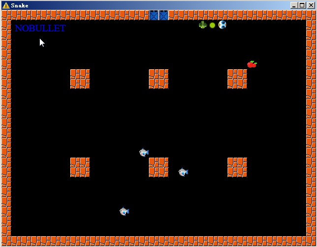

This game is inspired by the classical game snake.
You are the snake, moving around in a some mysterious place. Some monsters are moving around as well. Your task is to eliminate all the monsters and become the hero of the world (-_-!..yes, so lame..)
You can shoot bullet at the monster. Each shoot consumes one node of your body. As long as you only have one body node, you are not able to shoot any more. So, KEEP EATING!
Sometimes the killed monster will leave some treasure, the "bullet box", for you. Eating bullet box empowers your bullet, such as adding icing or blazing effect. Iced bullet can freeze the monster for several seconds. Blazing bullet just has more harm. The up-left blue text denotes what type of bullet you have right now. You can switch between bullet types you have right now, and decide which kind of bullet you are going to shoot.
Once you hit the monster or any obstacles, you lose one body node. When your body has less than 1 node (excluding head and tail), you are DEAD
You can refer to "Help" for control instructions